16-825 Assignment 5: Point Cloud Classification and Segmentation
Training setup
| Setting | Value |
|---|---|
| Optimizer | Adam, lr 1e-3 |
| Batch size | 32 |
| Loss | Cross-entropy |
| PointNet cls (Q1) | 60 epochs, constant lr |
| PointNet seg (Q2) | 60 epochs, cosine decay to 1e-5 |
| PointNet++ cls / seg (Q4) | 40 epochs, cosine decay |
| Train points | Random 2500 of 10,000 per object each batch (fits 8 GB GPU, light augmentation) |
| Test points | 10,000 |
Q1. Classification Model
Architecture: a shared per-point MLP (3→64→64→64→128→1024, Conv1d + BN + ReLU), then a max-pool over points to get a 1024-d global feature, then FC layers 512→256→3 with BN, ReLU and dropout 0.3.
Test accuracy: 97.17% (926 / 953), best checkpoint at epoch 58.
| GT \ Pred | chair | vase | lamp | per-class acc |
|---|---|---|---|---|
| chair (617) | 616 | 1 | 0 | 99.8% |
| vase (102) | 1 | 89 | 12 | 87.3% |
| lamp (234) | 0 | 13 | 221 | 94.4% |
Random test samples (all correct)
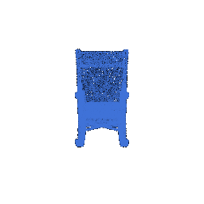
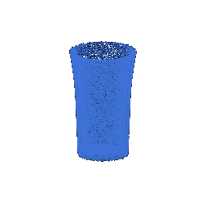
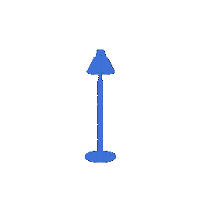
Failure cases (at least one per class)
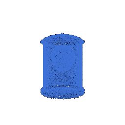
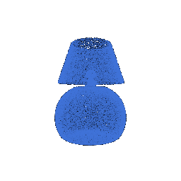
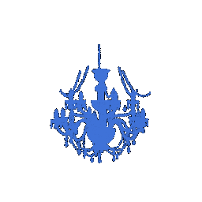
Interpretation. Nearly all errors are vase↔lamp confusions, because vases and lamps share a very similar global structure (a round body with thin parts on top). PointNet has no notion of local structure: it only max-pools independent per-point features, so it cannot pick up the fine local details that tell the two classes apart.
Q2. Segmentation Model
Architecture: per-point MLP 3→64→64 (local feature), then 64→128→1024 followed by a max-pool (global feature). The 1024-d global feature is copied to every point and concatenated with its 64-d local feature (1088-d). A per-point MLP 1088→512→256→128→6 produces the part logits.
Test accuracy: 90.17% (per-point, over 617 chairs × 10,000 points). Per-object accuracy has a median of 93.6%, a minimum of 45.3% and a maximum of 99.6%.
Left = ground truth, right = prediction. Part colors:whitemagentacyan (back)yellow (arms)blue (legs/base)red (seat)
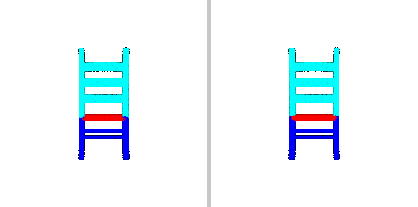
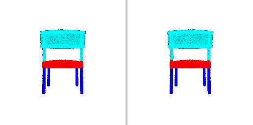
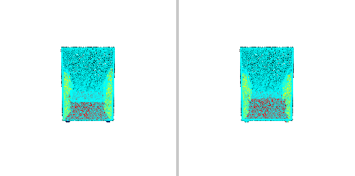
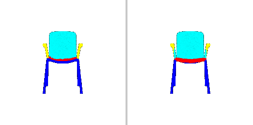
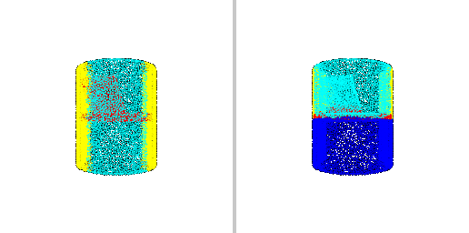
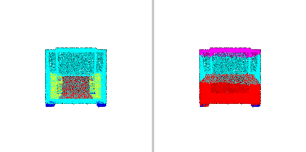
Interpretation. Normal chairs (legs, a seat and a back) are segmented almost perfectly; the small errors sit on part boundaries. The bad cases are unusual shapes whose parts are not stacked by height. PointNet has no notion of local structure: each point is labeled from its own position plus one max-pooled global feature, so it mostly learns a height prior ("bottom = legs, middle = seat, top = back") that fails on these shapes.
Q3. Robustness Analysis
Both experiments use the Q1/Q2 checkpoints unchanged (no retraining), evaluated on the full test sets. Rows marked 0° or 10,000 are the Q1/Q2 baselines. The visualizations always show the same objects: classification #524 (chair) and segmentation #499.
Experiment 1: rotating the input
Procedure. Rotate every test point cloud about the z axis (the camera's viewing axis in the renders, so the object tilts sideways) by θ ∈ {0, 15, 30, 45, 60, 90, 135, 180}°, then evaluate. Run with python eval_cls.py --rot_deg 45 --rot_axis z (and likewise for eval_seg.py).
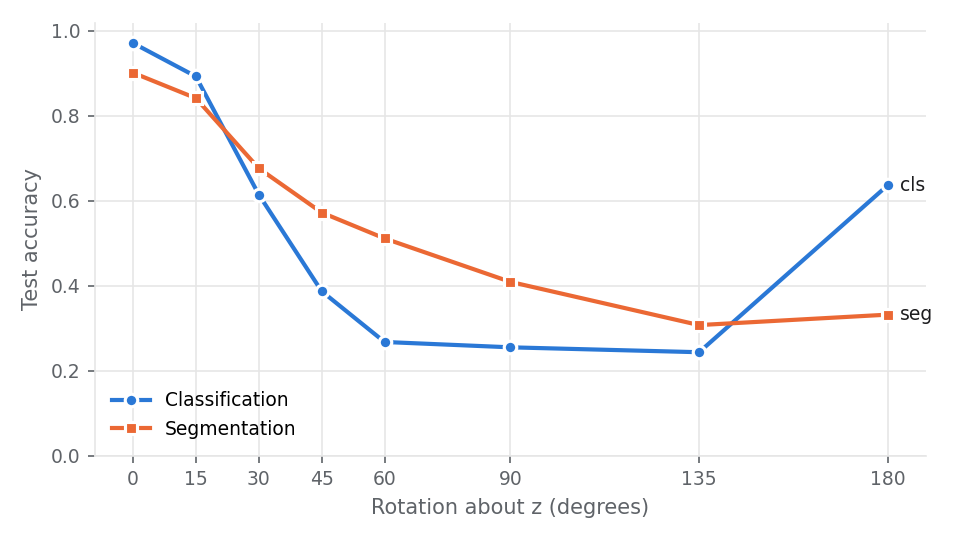
| θ | cls acc | seg acc |
|---|---|---|
| 0° (Q1/Q2) | 97.2% | 90.2% |
| 15° | 89.3% | 84.2% |
| 30° | 61.5% | 67.7% |
| 45° | 38.7% | 57.2% |
| 60° | 26.8% | 51.1% |
| 90° | 25.5% | 40.9% |
| 135° | 24.3% | 30.7% |
| 180° | 63.7% | 33.2% |
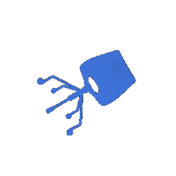
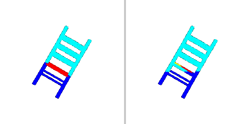
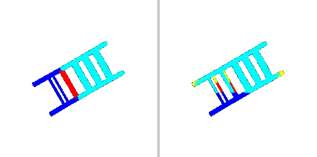
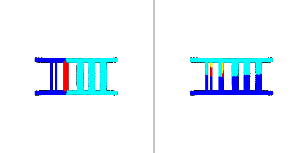
Interpretation. PointNet without the T-Net is not rotation-invariant. Max-pooling only removes the point order, not the orientation: the first layer is a linear function of the raw xyz, so a rotated chair produces different features, and every training shape is upright. Accuracy drops sharply after 15–30°; at 60° classification is 26.8%, far below always guessing "chair" (64.7%), because a tilted chair loses the "legs below, back above" layout. Segmentation still labels points by their new height, so the horizontal bands cut across the tilted chair (#499 at 90°). Rotation augmentation, the T-Net, or rotation-invariant input features would help.
Experiment 2: number of input points
Procedure. Evaluate with N ∈ {10000, 5000, 1000, 500, 100, 50, 10} points per object, using one fixed random subset of indices shared by all objects. Run with python eval_cls.py --num_points 100 (and likewise for eval_seg.py).
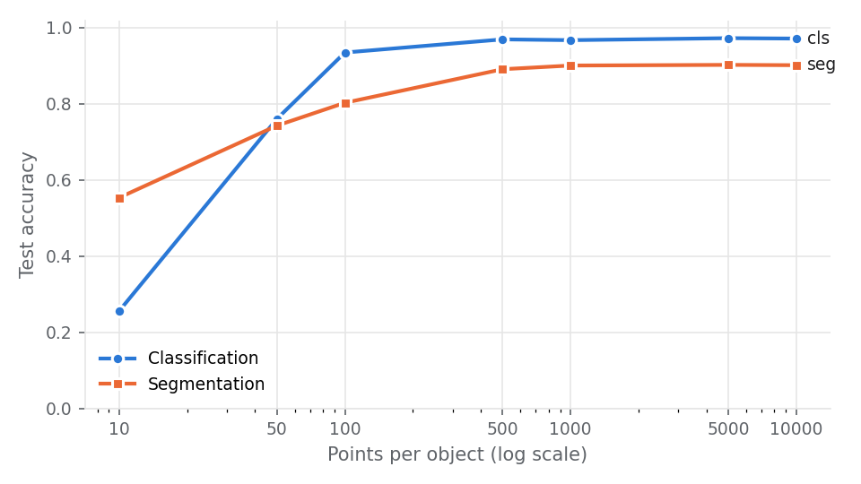
| N | cls acc | seg acc |
|---|---|---|
| 10000 (Q1/Q2) | 97.2% | 90.2% |
| 5000 | 97.3% | 90.3% |
| 1000 | 96.7% | 90.1% |
| 500 | 97.0% | 89.1% |
| 100 | 93.5% | 80.3% |
| 50 | 76.1% | 74.3% |
| 10 | 25.6% | 55.4% |
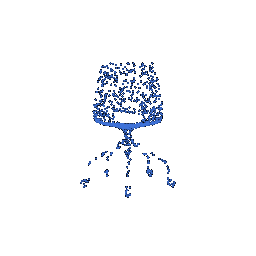
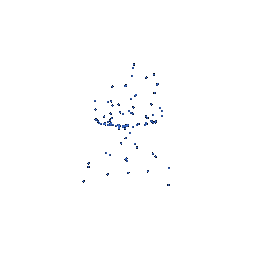
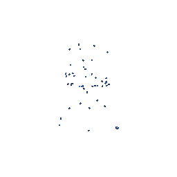
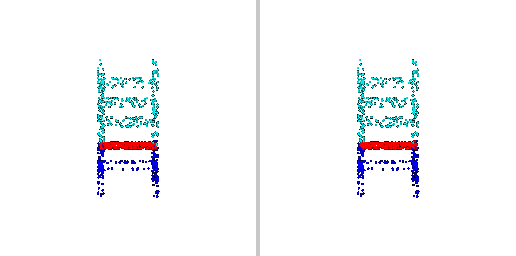
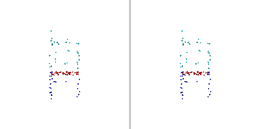
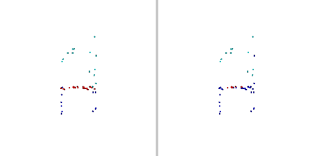
Interpretation. PointNet is very robust to sparser inputs. Down to 500 points (5% of the original) both tasks lose less than 1.1 points of accuracy. This follows from the architecture: the global feature is a max over per-point features, and with a few hundred well-spread points the critical points that set each max are still nearly present. Training on random 2500-point subsets also helped. Below about 100 points the max-pooled descriptor loses the critical points for thin structures such as legs and lamp stems. Classification collapses at 10 points (25.6%): 943 of 953 objects are called lamp. Ten scattered points carry essentially no shape information, so the max-pooled feature falls into one region of feature space. Segmentation degrades more gracefully (55% at 10 points), because even with a poor global code the per-point height prior still assigns many points to the large back and seat parts.
Q4. Bonus: Locality with PointNet++
Model
I implemented PointNet++ with single-scale grouping (pn2_cls_model / pn2_seg_model in models.py), using PyTorch3D's sample_farthest_points, ball_query and knn_points. PointNet applies one global max-pool to independent points. PointNet++ instead builds features hierarchically from local neighborhoods:
- Set abstraction (SA): farthest-point sampling picks S centroids. A ball query collects up to K neighbors within radius r around each centroid. A small shared PointNet runs on each neighborhood (neighbor coordinates relative to the centroid, plus the previous features), followed by a max-pool over the neighborhood. This is a learned "local convolution" on points.
- Classification: SA(512 centroids, r=0.2, K=32, MLP 64-64-128), then SA(128, 0.4, 64, 128-128-256), then a global SA (256-512-1024), then FC 512→256→3 with dropout 0.4.
- Segmentation: four SA levels (1024/256/64 centroids at r = 0.1/0.2/0.4, then global), followed by four feature-propagation layers. These upsample features back to every input point by inverse-distance-weighted 3-nearest-neighbor interpolation, with skip connections, then a per-point head 128→6.
- Same training recipe as PointNet: 2500 points per object, 40 epochs, cosine LR, and evaluation on all 10,000 points.
- Implementation note: running the per-group MLP as Conv2d + BatchNorm2d on
(B, C, S, K)tensors hit a very slow cuDNN BatchNorm kernel (92% of step time). Flattening the groups to(B, C, S·K)with Conv1d + BatchNorm1d computes the same thing about 9× faster.
Results
| Model | cls test acc | chair / vase / lamp | seg test acc | seg per-object median |
|---|---|---|---|---|
| PointNet (Q1/Q2) | 97.17% | 99.8 / 87.3 / 94.4 | 90.17% | 93.6% |
| PointNet++ (SSG) | 97.69% | 99.7 / 90.2 / 95.7 | 91.42% | 95.0% |
Farthest-point sampling uses a random start point, so PointNet++ test accuracy varies a little between runs. The best epoch scored 98.2% during training, and a fresh evaluation of the same checkpoint gives the 97.69% above.
Classification: PointNet's failure cases under PointNet++
PointNet++ makes 22 errors versus PointNet's 27, and only 9 of them are shared. It gets 4 of the 5 Q1 failure cases right:
| object | GT | PointNet | PointNet++ |
|---|---|---|---|
| #406 | chair | vase | lamp |
| #618 | vase | lamp | vase |
| #651 | vase | lamp | vase |
| #726 | lamp | vase | lamp |
| #777 | lamp | vase | lamp |
The GIFs are the same as in Q1. The fixed cases are exactly the ones where the deciding evidence is a small local structure: the orchid's leaves and flower (#651), the shade-and-socket of the round-base table lamp (#726), and the chandelier's bulbs and arms (#777). PointNet's single global max-pool mixes those details away. PointNet++ encodes them first in local neighborhoods. The boxy chair #406 is still wrong, because it has no locally chair-like parts at all.
Segmentation comparison
Each GIF: ground truth (left) | PointNet++ prediction (right). Compare with the PointNet GIFs for the same objects in Q2.
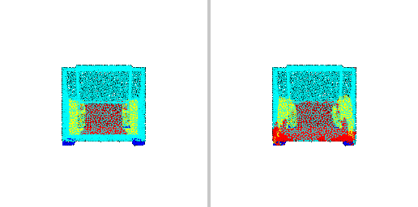
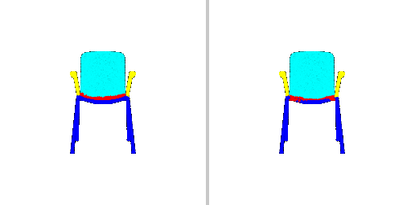
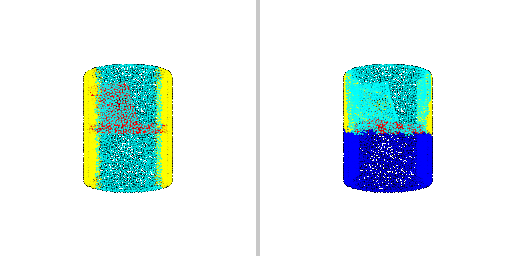
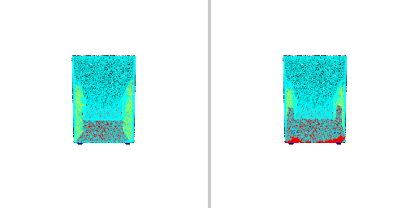
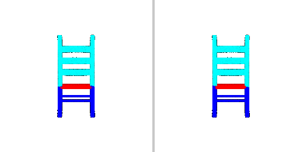
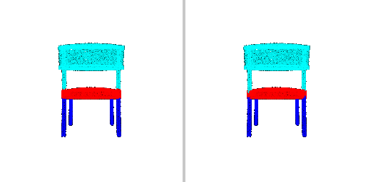
Interpretation. Locality helps most where the answer depends on fine local structure: thin parts (arm rests, legs, lamp stems) and part boundaries. This is where the per-object median goes up, from 93.6% to 95.0%. Overall, though, the gain is small, since both models still end with a global feature and ordinary chairs were already easy for PointNet.
Trade-off: point density. Locality needs enough points to work. With 1000 points PointNet++ still holds up (cls 96.9%, seg 88.5%, vs. PointNet's 96.7% and 90.1%). With 100 points it collapses (cls 26.4%, seg 32.4%), while PointNet keeps 93.5% and 80.3%. The ball-query radii work for dense input, but with sparse input each neighborhood has only one or two points. PointNet's per-point features don't depend on neighbors, so it handles both dense and sparse input. Training with random point dropout, or the multi-scale grouping from the PointNet++ paper, should fix this.